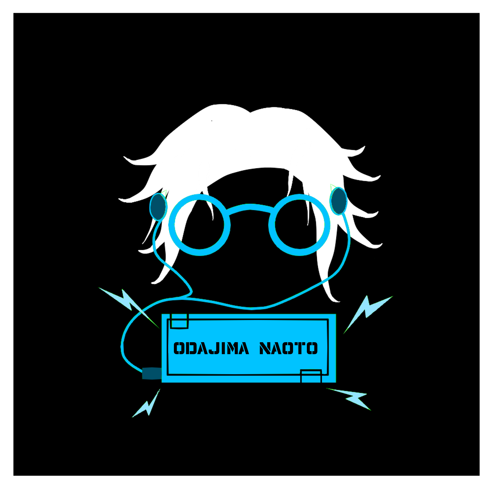

レーザーや障害物を避ける2Dアクションゲーム。アイテムを取ると反射モードが発動し、受けたレーザーを跳ね返して隕石に追尾・破壊、スコアを稼いでハイスコア更新を目指す作品です。
「アイデア賞」を受賞した代表作で、ゲームロジック・UI・演出まですべてコーディングで実装しました。
| 操作 | キー |
|---|---|
| 移動（上下左右） | W A S D または ↑ ← ↓ → |
Xbox コントローラーに対応しています。
また、学内に設置されているアーケード筐体にも対応しました。
以下のサイクルをゲームオーバーになるまで繰り返すエンドレスゲームです。最終スコアでハイスコアを競います。
これらのルールは、ゲーム本編の「チュートリアル」から確認できます。
一度でも当たるとゲームオーバーになります。
ゲームの面白さを学ぶ授業で、「さける」「とる」「こわす」の3つのお題が出されました。
開発当初は、特に「こわす」要素をどのようにゲームに落とし込むかに悩みました。
制作を進める中で次の課題が生まれました。
チームで議論を重ねた結果、「反射」というアイデアを採用しました。
避けるべき障害物にあえて当たり、レーザーを反射して隕石を壊すことで駆け引きが生まれ、ゲーム性が明確になりました。
展示会では狙い通り高評価を得られ、多くの来場者に繰り返しプレイしていただきました。
「きれい × かっこいい」をコンセプトにした個性的なデザインです。
青色とピンク色の対比が特徴で、通常モードは青、反射モードはピンクと画面全体の色調が切り替わります。
レーザーは痕跡が残像のように残り、徐々に薄くなって色が変化するのもこだわりです。
ゲームには、常に動いているものがないと寂しく感じます。
そのため、画面の至る所で常に動きが出るよう多数のアニメーションを実装しています。
レベルアップ演出・ゲームオーバー演出など、節目ごとに印象的な動きを持たせました。
出現する際レーザーに火花が飛び散る演出・物理法則を考慮した動きを再現しました
「ガラスを壊す」ような破片の演出と効果音を取り入れています。
現実ではガラスを壊すことはあまりありません。ゲームならではの爽快感を表現するため、このような演出を採用しています。